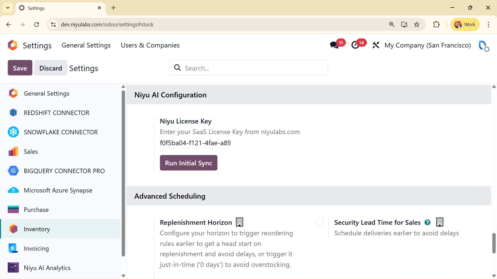
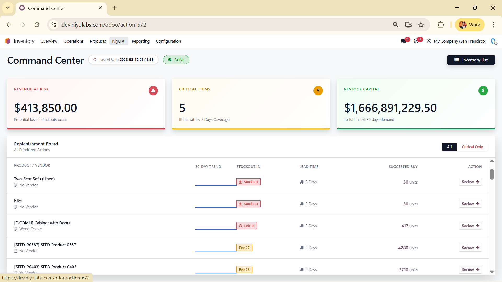

Connect Niyu Forecast
inside Odoo.
Install the module, open Inventory Settings, enter your API key, save, and run the initial sync. The module then appears under the Niyu AI menu for planning, actions, rules, runs, and lead-time analysis.
Use this screen to connect your database to the forecasting server, review plan limits, set forecast horizon, exclude archived products, and control lead-time learning behavior.

Your inventory
control room.
See urgent actions, buy budget needed, warehouse pressure, internal rebalance opportunities, setup blockers, and the latest forecast run status in one place.

Every product gets
a clear next step.
Review buy now, transfer now, transfer + buy, setup needed, watch, and ignored lines. Users do not need to interpret a raw forecast table. The next action is already written.